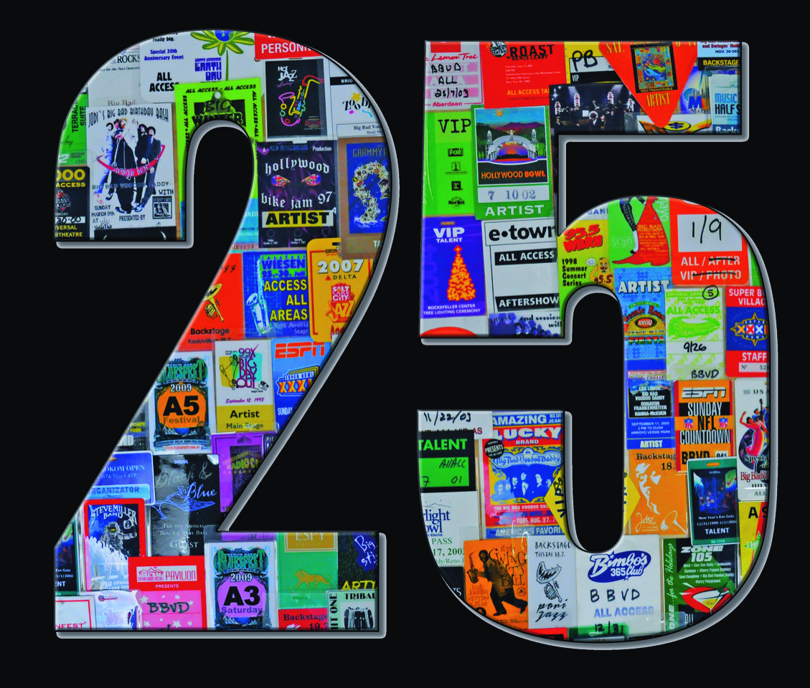
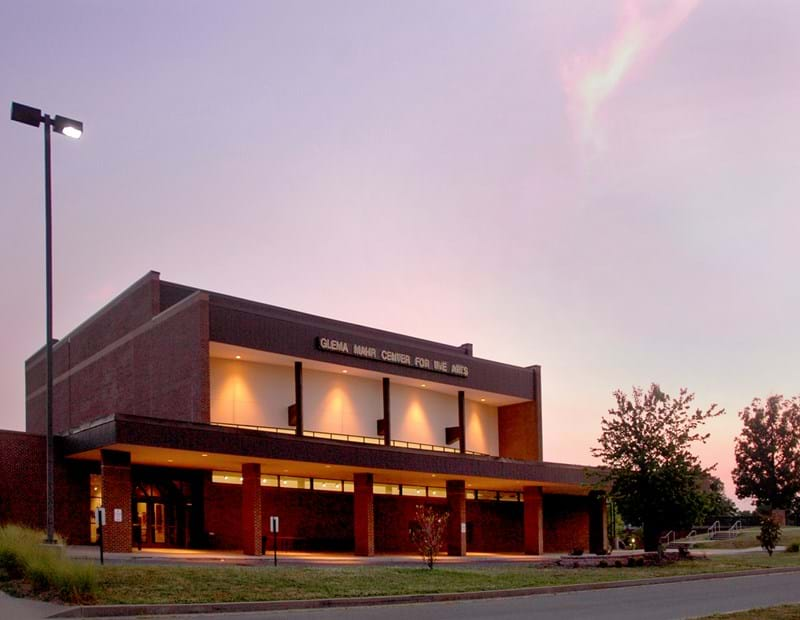

25 year anniversary

From our very first show at a backyard party, until today, nearly 3000 shows later, Big Bad Voodoo Daddy’s unending goal has always been to play good music, and have fun while doing it.
April 25th, 2018 marks the 25th anniversary of Big Bad Voodoo Daddy’s first show on April 25th, 1993 at that backyard party in Ventura California.
We couldn't have done it without you.
From those partygoers at our first show, 25 years ago, to the folks we continue to play for, all year long,
Thank you!
UPCOMING OCTOBER SHOWS
Thursday October 4th Glema Mahr Center for the Arts- Madisonville, KY
Kentucky is known for the Kentucky Derby and Bluegrass music, but did you know that Teacher Mary S. Wilson held the first observance of Mother's Day in Henderson Kentucky in 1887?
Six years later in 1893 in Louisville Kentucky, two sisters, Patty and Mildred J. Hill, wrote the melody to the song “Happy Birthday to you,” for their Kindergarten class.
And of course, no Kentucky list of trivia would be complete, without mentioning that the swimsuit that Mark Spitz wore in the 1972 Olympic games was manufactured in Paris, Kentucky.
How’s that for some mind blowing trivia?
All kidding aside, we are looking forward to visiting one of Kentucky’s nicest venues, The Glema Mahr Center for the arts, in Madisonville Kentucky. You can enjoy great acoustics from any of it’s 950 seats.
We plan to bring our special voodoo blend to the Glema Mahr on Thursday, October 4th.
We’ll see you there!
Friday October 5th, The Cowan. Nashville, TN

At first glance, rock 'n roll and golf don't mix.
Maybe at second glance, too. But with its venue The Cowan, golf entertainment facility Topgolf Nashville is looking to become a contender in the city's live music scene.
The Cowan named "Topgolf Live" until just a few weeks ago is the first dedicated music venue opened by Topgolf.
The 600-capacity room, located on the bottom floor of the 65,000-square-foot Topgolf building, opened in late September 2017.
Over the last several months, the venue has hosted diverse acts ranging from rock great Los Lobos to Charles Kelley of pop-country trio Lady Antebellum.
The pristine room, with gleaming cement floors and a 16-by-9-foot LED wall, was designed by Topgolf architects the Aria Group and J Sound Services, There isn't a bad sightline in the house, and with one main bar and two satellite bars, the drinks flow fast.
Seems like a great place for a show.
We hope to see y’all there on Friday, October 5th!